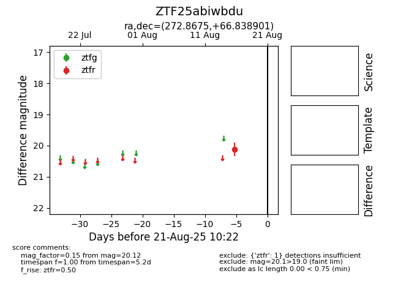

Target ZTF25abiwbdu at 2025-08-21 10:22, see:
FINK: fink-portal.org/ZTF25abiwbdu
Lasair: lasair-ztf.lsst.ac.uk/objects/ZTF25abiwbdu
ALeRCE: alerce.online/object/ZTF25abiwbdu
alt names
ZTF25abiwbdu (ztf,alerce)
coordinates:
equatorial (ra, dec) = (272.8675,+66.83890)
galactic (l, b) = (96.7301,+28.68342)
photometry
last ztfr=20.12
1 ztfr detections
